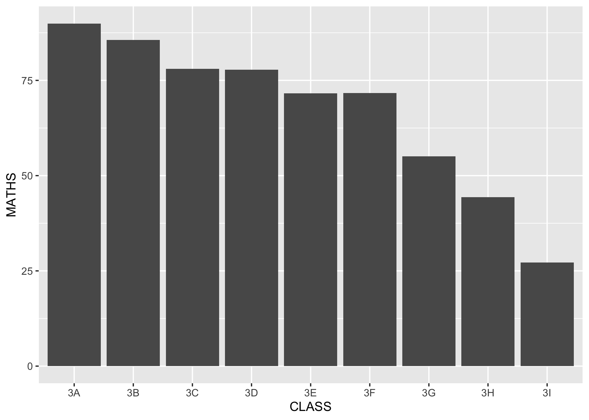
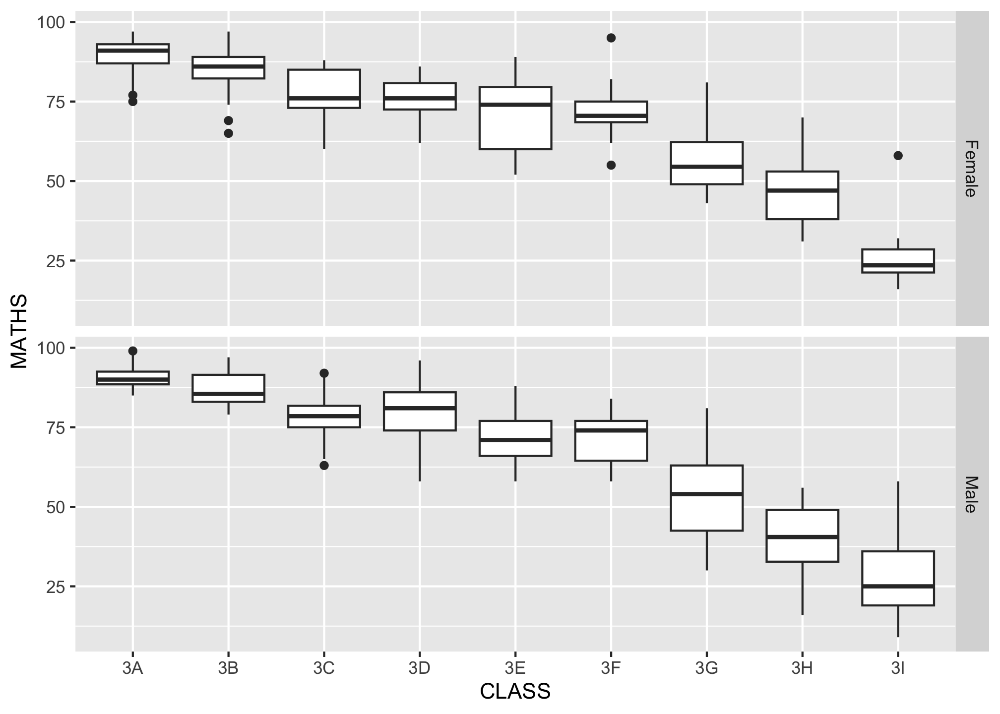
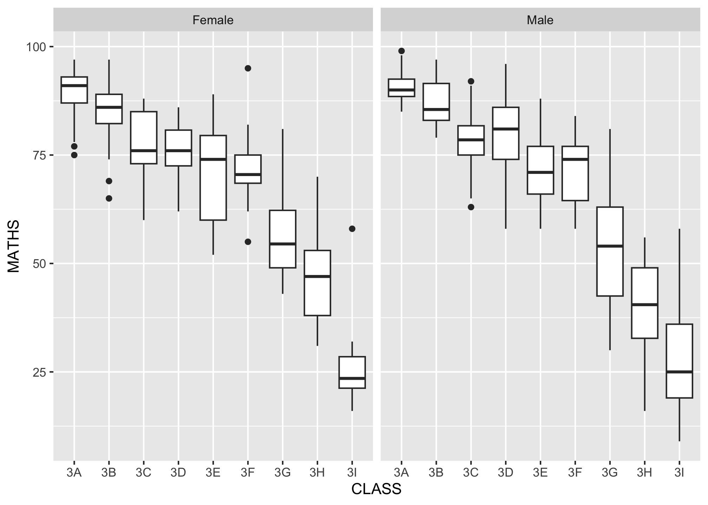
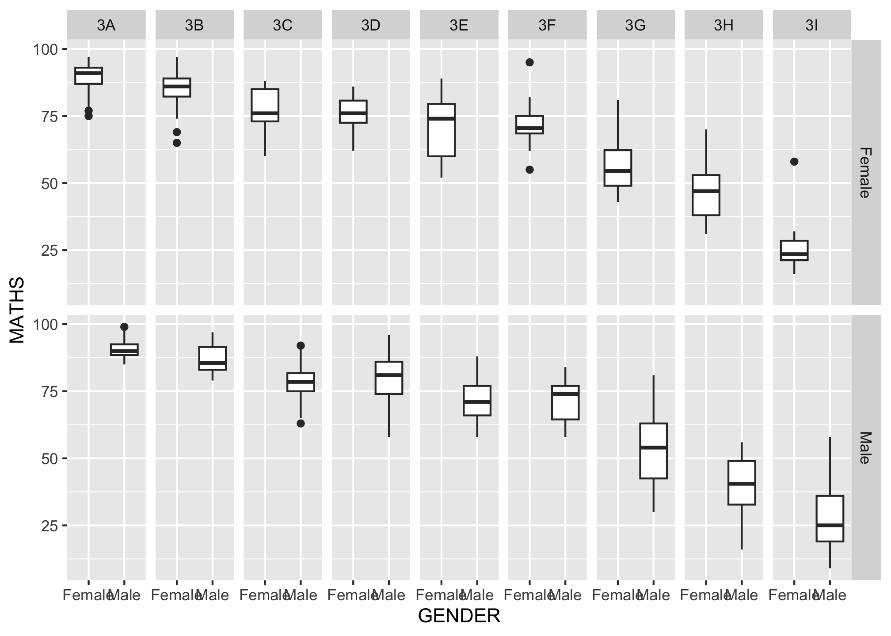
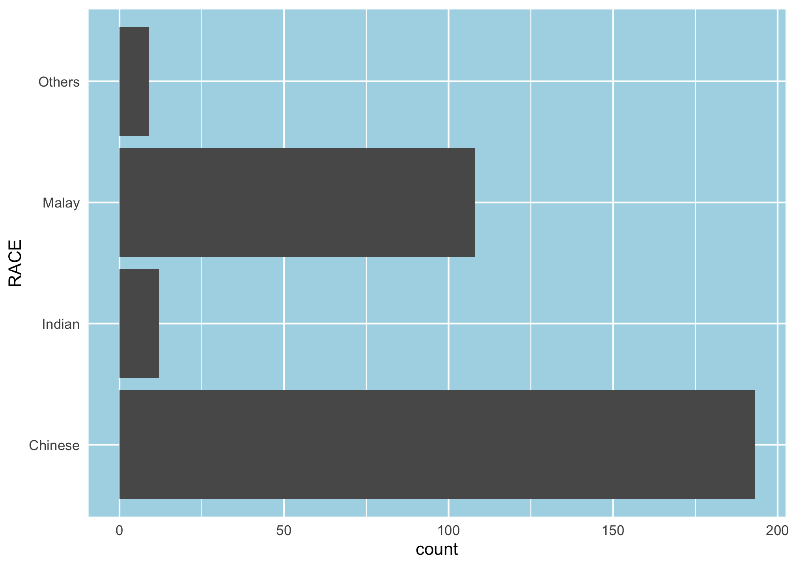
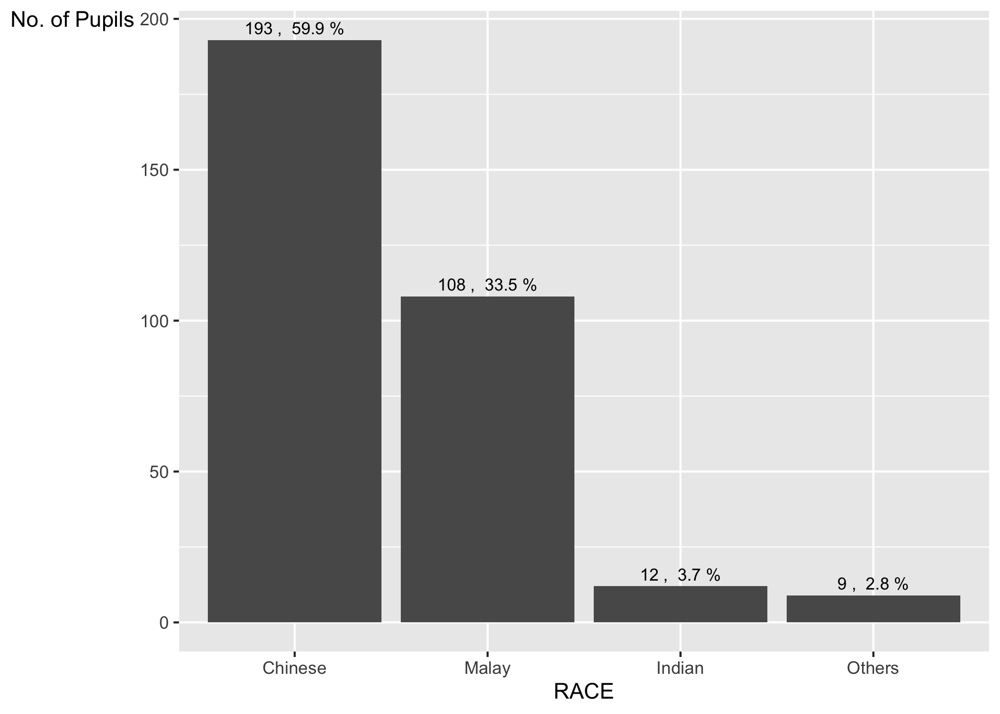
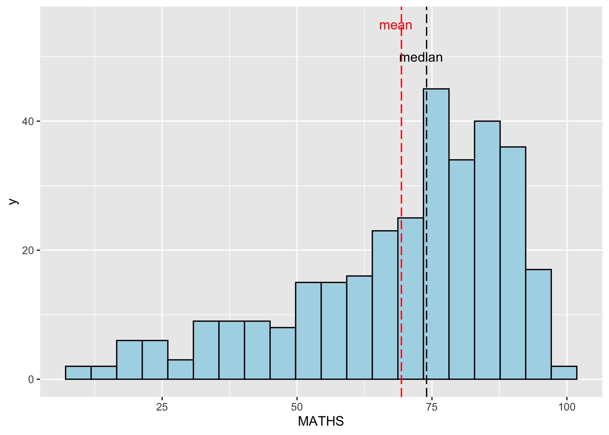
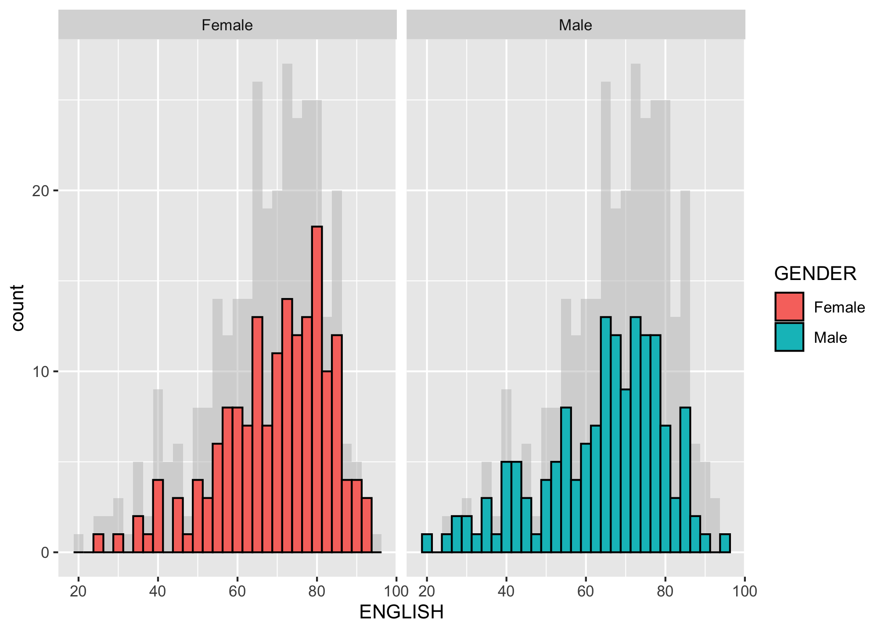
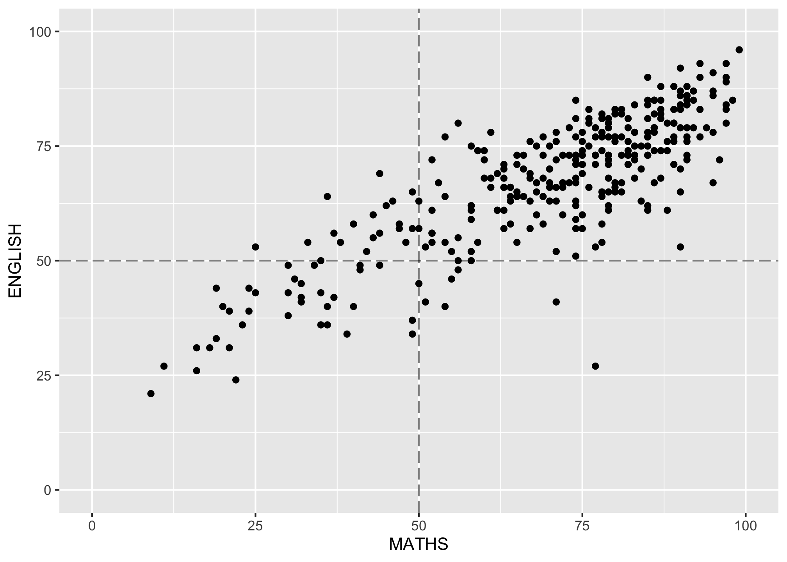

library(ggplot2)
library(tidyverse)Hands-on Exercise 1: ggplot using R
hands-on exercise
Creating 1st data visualisation using ggplot package in R.
Getting Started
Import libraries & read sample data
Load Data
d <- read.csv('/Users/minghaooo/Documents/Term 4/ISSS608-Visual Analytics/inclass-1/Exam_data.csv')Plot the average maths results of each class
options(repr.plot.width = 5, repr.plot.height =2)
ggplot(d, aes(x=CLASS, y=MATHS),height = 10 , width = 50) + geom_bar(stat = "summary",fun = "mean")
Working with facet
# Facet by rows
ggplot(d, aes(x=CLASS, y=MATHS)) + geom_boxplot()+facet_grid(rows=vars(GENDER))
#Facet by columns
ggplot(d, aes(x=CLASS, y=MATHS)) + geom_boxplot()+facet_grid(cols=vars(GENDER))
#Facet Grid: rows + columns
ggplot(d, aes(x=GENDER, y=MATHS)) + geom_boxplot()+facet_grid(rows=vars(GENDER), cols=vars(CLASS))
Working with theme
ggplot(data=d,
aes(x=RACE)) +
geom_bar() +
coord_flip() +
theme_minimal()+
theme(panel.background = element_rect(fill = "lightblue",colour = "white"),
panel.grid.major = element_line(size = 0.5, linetype = 'solid',colour = "white"),
panel.grid.minor = element_line(size = 0.25, linetype = 'solid',colour = "white")
)Warning: The `size` argument of `element_line()` is deprecated as of ggplot2 3.4.0.
ℹ Please use the `linewidth` argument instead.
The makeover design 1
- Arrange bar charts in descending order
d %>%
mutate(RACE = fct_infreq(RACE)) %>%
ggplot(aes(x=RACE)) +
geom_bar()+
ylab('No. of Pupils')+
theme(axis.title.y=element_text(angle=0))+
geom_text(stat = 'count',
aes(label = paste(..count..,', ',round(..count../dim(d)[1]*100,digits=1), '%')),
vjust = -0.5,
size=3
)Warning: The dot-dot notation (`..count..`) was deprecated in ggplot2 3.4.0.
ℹ Please use `after_stat(count)` instead.
The makeover design 2
- Adding mean and median lines on the histogram plot
- Change fill color and line color
ggplot(data = d,
aes(x=MATHS))+
geom_histogram(bins = 20,
color = "black",
fill = "light blue") +
geom_vline(xintercept = mean(d$MATHS),
color = "red",
linetype = "longdash") +
annotate("text",x=mean(d$MATHS)-1,y=55, label="mean",color='red') +
geom_vline(xintercept = median(d$MATHS),
color = "black",
linetype = "longdash")+
annotate("text",x=median(d$MATHS)-1,y=50, label="median")
The makeover design 3
- The background histograms show the distribution of English scores for all pupils
# duplicate a new dataset without gender
no_gender <- subset(d, select=-c(GENDER))
#fill diff. colour by gender
ggplot(d, aes(x=ENGLISH,fill=GENDER))+
#plot background using duplicate dataset
geom_histogram(data = no_gender, fill = "grey",binwidth = 2.5,alpha = 0.5)+
#plot foreground
geom_histogram(binwidth = 2.5, color = "black")+
#facet by gender
facet_wrap(~GENDER)
The makeover design 4
- A within group scatterplot with reference lines
ggplot(data=d,
aes(x = MATHS,y=ENGLISH)) +
geom_point()+
xlim(0,100)+
ylim(0,100)+
geom_vline(xintercept = 50, alpha=.5, linetype = "longdash") +
geom_hline(yintercept = 50, alpha=.5, linetype = "longdash")